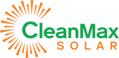
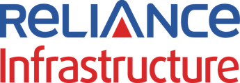
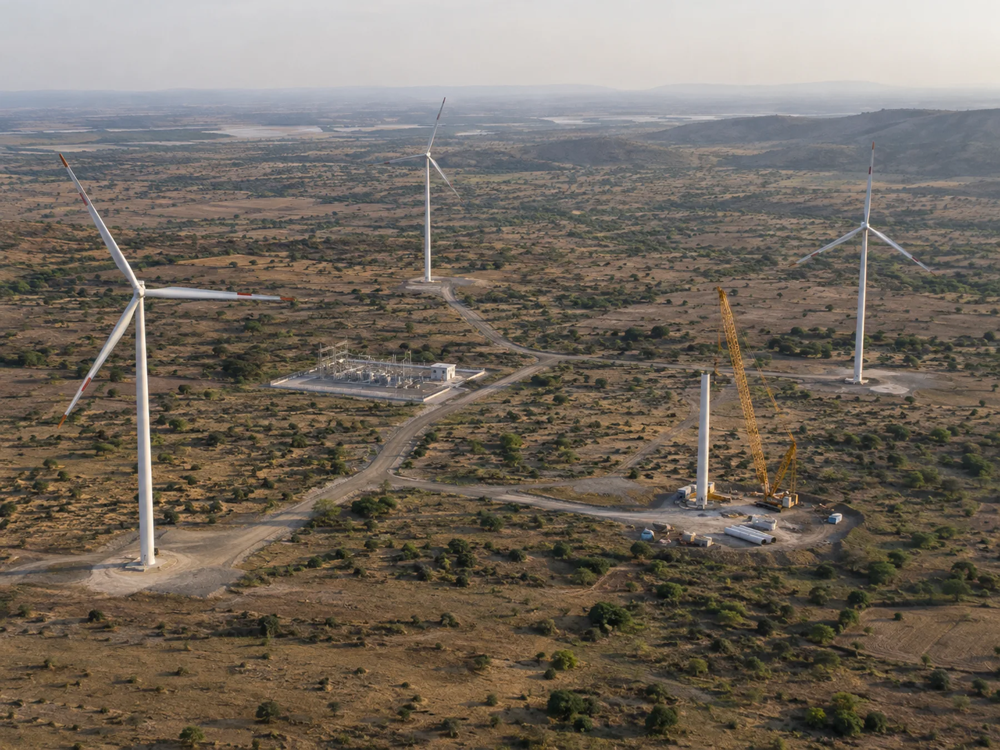
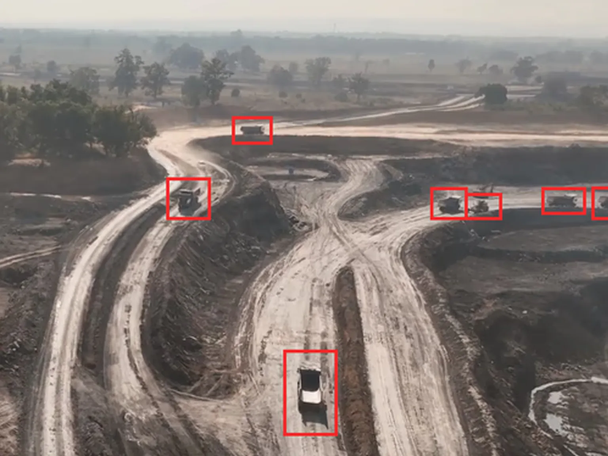
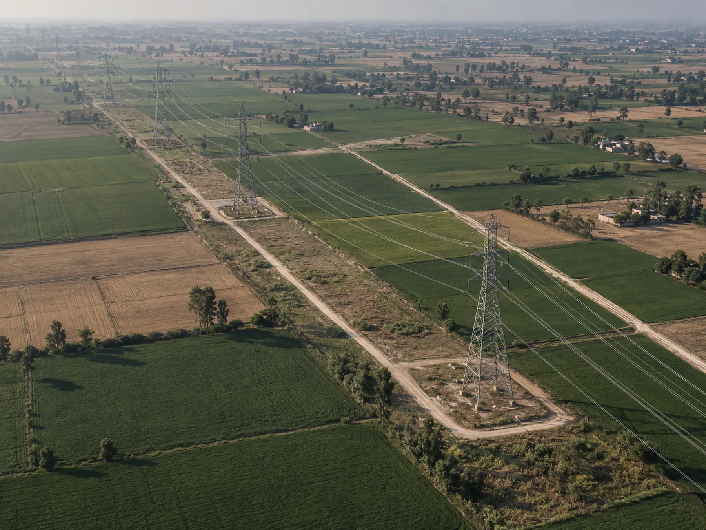
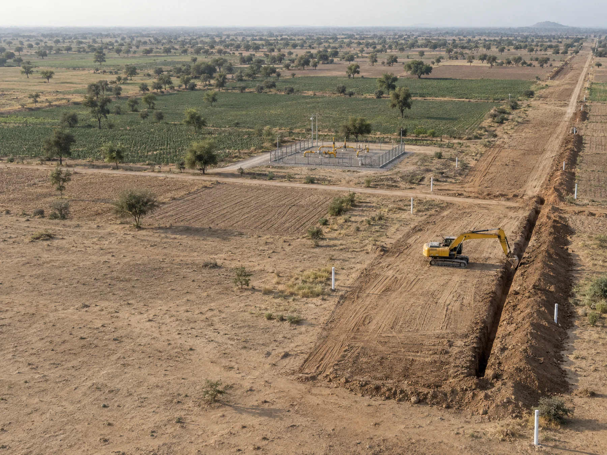
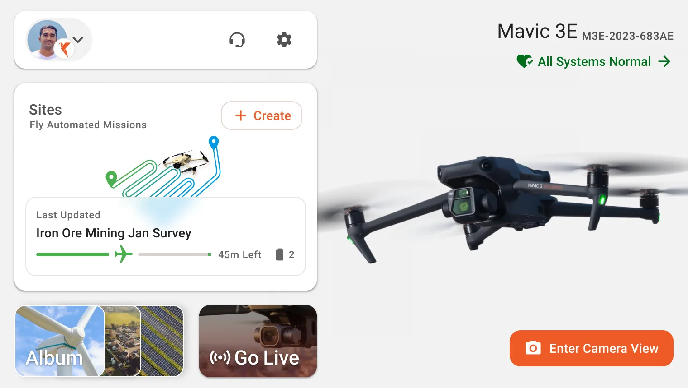
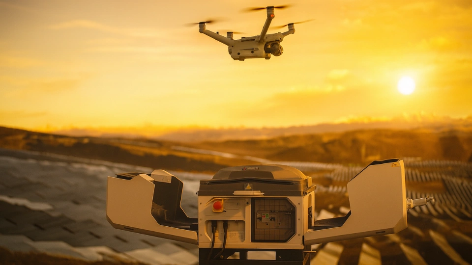
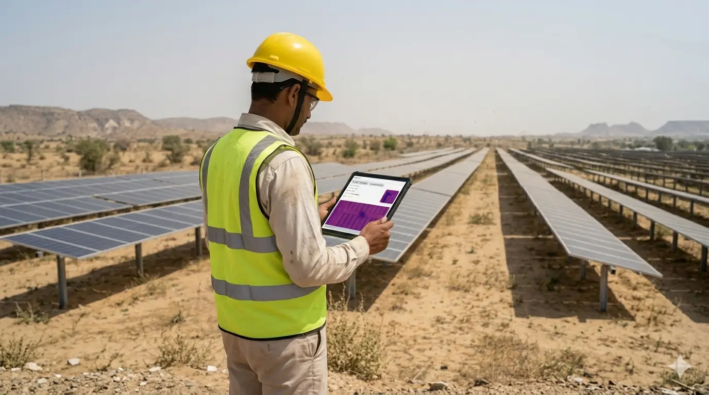

Physical world intelligence, delivered
See every site.
Act with clarity.
Autonomous aerial intelligence for enterprises building and operating at scale.
01 Solar infrastructure
- 160+enterprises trust Skylark
- #4globally ranked by Drone Industry Insights, 2020
- 40%faster project execution on site
- ×3average overruns avoided per site
Trusted by teams managing critical infrastructure





Field views
Aerial perspectives, in motion.
From generation sites and transport corridors to mines and utility networks.






Operational clarity
Most enterprises don’t lack drone data. They lack visibility they can act on.
Streamline capture and reporting.
Spot deviations before they grow.
Keep site records together for review.
Inspect suitable areas remotely.
Built for your site
Backed by experience.
- 01We understand the problem
Solutions shaped around the way your teams work.
- 02We connect the workflow
From drone capture to insights your teams can use.
- 03Scale alongside your team
We bring field experience and work with your teams to shape the right approach.
- 04We build with you
Test the use case, refine the solution and scale what works.
How Skylark works
One connected journey from site capture to enterprise decisions.
SkyStation
Scheduled or event-triggered drone capture through a stationed system, where deployment conditions permit.
Drone Mission Ops
Plan missions, manage drone operations and oversee flight execution.
Spectra
Convert captured data into maps, measurements, change detection and actionable site insights.
Your team + Skylark
Together, we tailor dashboards, reporting and ongoing support to your requirements and site scale, helping your team prioritise action.
Drone Mission Ops
Mission workflowA repeatable workflow for every flight.
Move from mission readiness to live capture through one connected operational view.

Industry solutions
Built around the way your industry operates.
Solar
Track the build. Locate the faults.
Assess terrain, verify construction progress, track loose inventory and locate module-level anomalies for maintenance.
EPC
- AC and DC construction monitoring
- Loose inventory tracking
- Worksite safety monitoring
O&M
- O&M inspection
- Shadow analysis
- Site patrolling and security monitoring
Hydrology
- Land feasibility analysis
Customer success
Trusted by the teams responsible for critical assets.
“Partnering with Skylark on our solar projects was seamless. From design to commissioning, their professionalism, quality, and timely execution stood out. Their proactive planning and stakeholder coordination ensured smooth execution and excellent results.”
Head of Sales Operations
Major steel producer in India
“Skylark helped us build one of India’s fastest solar plants. Autonomous inspections caught faults before they cost us generation, reduced downtime, lowered OpEx, and increased overall output.”
Chief Commercial Officer
Commercial and industrial renewable energy provider
“Skylark Drones transformed how we managed our 750 MW project, reducing our build time by half. Aerial intelligence helped us monitor progress, improve safety oversight, and accelerate construction. It’s now a core part of our workflow across multiple sites.”
Chief Digital Officer
Large Indian infrastructure and energy group
Resources & insights
Practical insights for informed site decisions.

The solar site that monitors itself: why autonomous drone docks are becoming core EPC infrastructure
How stationed drone systems connect recurring site capture with construction monitoring and project governance.

Solar inspection turnaround: the hidden revenue variable
Why the time between inspection and actionable insight matters for maintenance decisions and asset performance.

Unlock survey accuracy with ground control points: a guide for survey professionals
A practical guide to using ground control points to improve drone survey accuracy.
Start a conversation
Get in touch.
Tell us about your site, operations, or inspection requirements.